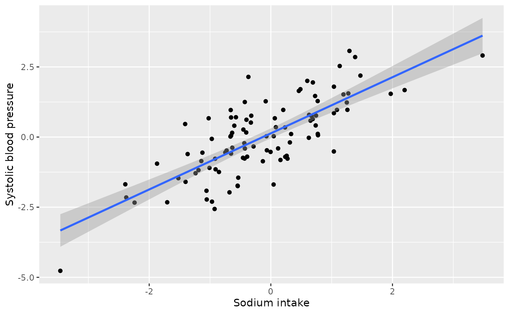
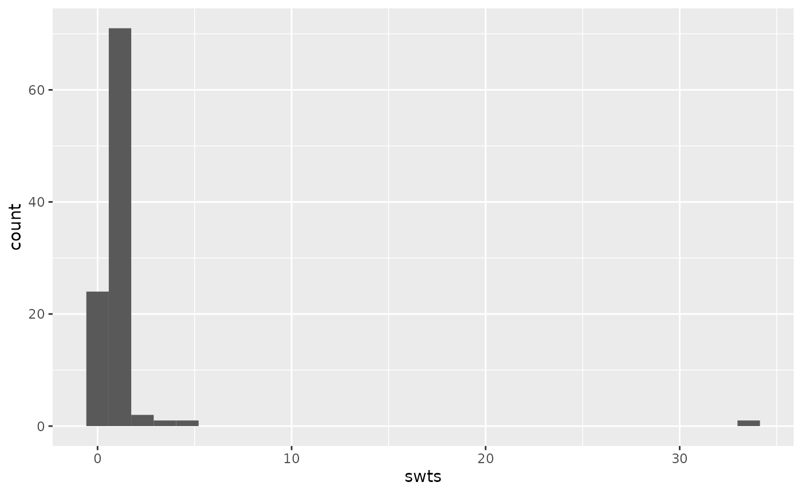
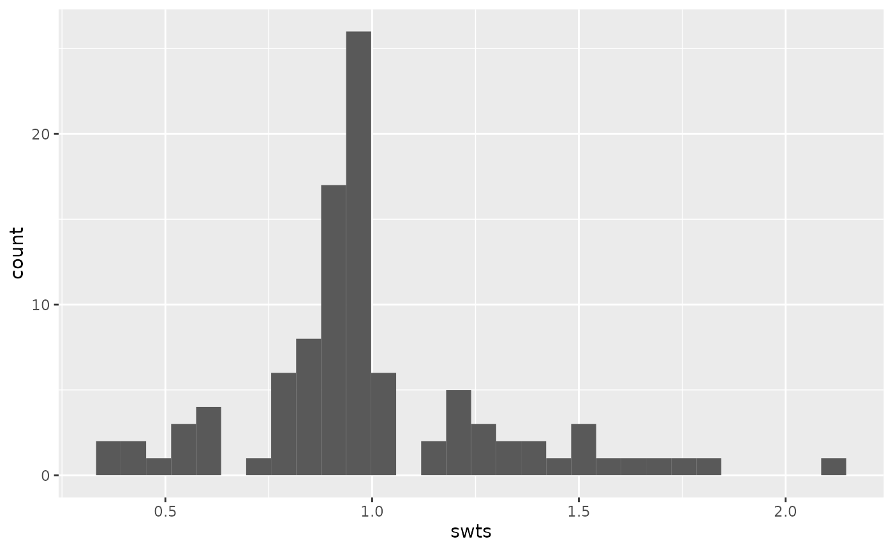

A collider example in a medical context
Source:vignettes/a-collider-example-in-a-medical-context.Rmd
a-collider-example-in-a-medical-context.RmdThis article walks through a specific medical example of a potential
collider, building on the example laid out by Luque-Fernandez et al
(2019) in Paradoxical
collider effect in the analysis of non-communicable disease
epidemiological data: a reproducible illustration and web
application. Here, we use the causal_collider and
causal_collider_time data sets, but suppose that the
exposure is sodium intake, the outcome is
systolic blood pressure (SBP), and the covariate is urinary
protein excretion (proteinuria).
Setup
Causal Question: What is the average treatment effect of 24-hour dietary sodium intake (in grams) on systolic blood pressure?
Available data: We have a data set with three
variables exposure (sodium intake in grams),
outcome (systolic blood pressure) and
covariate (24-hour excretion of urinary protein,
proteinuria)
The truth: Because this is simulated data, we know the true relationship between sodium intake and systolic blood pressure. In this case the estimated average treatment effect should be 1.
Let’s begin by examining the data. We will additionally load the
tidyverse package, which we will use for data visualization
and manipulation.
library(quartets)
library(tidyverse)
causal_collider
#> # A tibble: 100 × 3
#> exposure outcome covariate
#> <dbl> <dbl> <dbl>
#> 1 0.486 1.71 2.24
#> 2 0.0653 0.669 0.924
#> 3 -1.40 -1.60 -0.999
#> 4 -0.546 -1.73 -2.34
#> 5 -0.401 0.617 0.207
#> 6 -2.38 -2.15 -3.62
#> 7 0.652 0.585 0.799
#> 8 -0.574 0.706 -1.31
#> 9 1.19 1.52 1.16
#> 10 -0.664 0.0181 -1.89
#> # ℹ 90 more rowsTo further help us remain in the real-world example, we can assume these are normalized versions of these variables (as negative values otherwise would not make sense).
Analysis
We can examine the univariate effect of the exposure on the outcome via a scatterplot.
ggplot(causal_collider, aes(x = exposure, y = outcome)) +
geom_point() +
geom_smooth(method = "lm", formula = "y ~ x") +
labs(x = "Sodium intake", y = "Systolic blood pressure")
We see a positive relationship between unadjusted 24-hour sodium intake and systolic blood pressure.
How should we estimate this average treatment effect? The first step is to draw the proposed causal diagram. As the motivating paper explains, “high levels of 24-h excretion of urinary protein (proteinuria) are caused by sustained high SBP [systolic blood pressure] and increased 24-h dietary sodium intake. Therefore, … proteinuria acts as a collider. In a realistic scenario, one might control for proteinuria if physiological factors influencing SBP are not completely understood by the researcher, the relationships between variables are not depicted in a DAG or proteinuria is conceptualized as a confounder. Controlling for proteinuria introduces collider bias.” (Luque-Fernandez et al 2019).
Let’s suppose we initially erroneously believe that proteinuria is a
confounder, that is, we believe it should be adjusted for in
the analysis. For continuous exposures, the correlation between the
exposure and potential confounder is a recommended way to assess balance
(Zhu et al. 2014).
Let’s examine the pre-adjustment correlation between the
exposure and covariate.
causal_collider |>
summarise(cor(exposure, covariate))
#> # A tibble: 1 × 1
#> `cor(exposure, covariate)`
#> <dbl>
#> 1 0.700We observe a strong, positive, correlation between sodium intake and proteinuria. This is well above the rule of thumb for achieving balance of |0.1| (Zhu et al. 2014).
There are several methods for estimating average treatment effects of continuous exposures, such as inverse probability weighting or g-computation. Let’s use inverse probability weighting. We will begin by creating these weights.
The first step is to calculate the propensity score model, which will
be used in the denominator of the weight. That is, we are building a
model to predict sodium intake from proteinuria
(denominator_model). We then plug the fitted values from
the model into a Gaussian density along with the residual standard
deviation, as seen in the second portion of the code below.
denominator_model <- lm(
exposure ~ covariate,
data = causal_collider
)
denominators <- causal_collider %>%
mutate(
propensity_score = predict(denominator_model),
denominator = dnorm(
exposure,
propensity_score,
sigma(denominator_model)
)) %>%
pull(denominator) We then fit the numerator of the weights for stability. The average exposure value is plugged into a Gaussian density along with the residual standard deviation, as seen in the second portion of the code below.
numerator_model <- lm(
exposure ~ 1,
data = causal_collider
)
numerators <- causal_collider %>%
mutate(
mean_exposure = predict(numerator_model),
numerator = dnorm(
exposure,
mean_exposure,
sigma(numerator_model)
)) %>%
pull(numerator)
causal_collider_wts <- causal_collider %>%
mutate(swts = numerators / denominators)We can examine the distribution of these weights:
ggplot(causal_collider_wts, aes(x = swts)) +
geom_histogram(bins = 30)
We can then examine the weighted correlation to assess the balance after incorporating the propensity score weight.
causal_collider_wts |>
summarise(
exposure_w = sum(swts * exposure) / sum(swts),
covariate_w = sum(swts * covariate) / sum(swts),
numerator = sum(swts * (exposure - exposure_w) * (covariate - covariate_w)),
denom = sqrt(sum(swts * (exposure - exposure_w)^2) * sum(swts * (covariate - covariate_w)^2)),
weighted_cor = numerator/denom
) |>
select(weighted_cor)
#> # A tibble: 1 × 1
#> weighted_cor
#> <dbl>
#> 1 -0.204Now the weighted correlation is -0.2 (not less than the target, |0.1|, but improved over the unadjusted correlation of 0.7 and the best we can do with this data).
Now that we have assessed balance, let’s fit our outcome model and estimate the average treatment effect of sodium intake on systolic blood pressure.
lm(outcome ~ exposure, data = causal_collider_wts, weight = swts)
#>
#> Call:
#> lm(formula = outcome ~ exposure, data = causal_collider_wts,
#> weights = swts)
#>
#> Coefficients:
#> (Intercept) exposure
#> 0.3284 0.3438Oh no! This claims that the estimated average treatment effect is 0.34 (we know the true effect should be 1).
Analysis incorporating time varying data
Luckily, we have some data that includes the timing of our measurements. We know that we should only be adjusting for factors that were measured prior to the exposure (i.e., we want to adjust for proteinuria at baseline not at follow-up). Let’s look at the time varying dataset:
causal_collider_time
#> # A tibble: 100 × 6
#> exposure_baseline outcome_baseline covariate_baseline exposure_followup
#> <dbl> <dbl> <dbl> <dbl>
#> 1 -1.43 0.287 -0.0963 -1.53
#> 2 0.0593 -0.978 -1.11 -0.278
#> 3 0.370 0.348 0.647 -0.00464
#> 4 0.00471 0.851 0.755 -0.806
#> 5 0.340 1.94 1.19 -0.276
#> 6 -3.61 -0.235 -0.588 -5.29
#> 7 1.44 -0.827 -1.13 1.52
#> 8 1.02 -0.0410 0.689 1.12
#> 9 -2.43 -2.10 -1.49 -3.94
#> 10 -1.26 -2.41 -2.78 -0.442
#> # ℹ 90 more rows
#> # ℹ 2 more variables: outcome_followup <dbl>, covariate_followup <dbl>Let’s suppose we still erroneously think proteinuria is a confounder, but we carefully only adjust for it at baseline. Let’s begin by examining balance.
causal_collider_time |>
summarise(cor(exposure_baseline, covariate_baseline))
#> # A tibble: 1 × 1
#> `cor(exposure_baseline, covariate_baseline)`
#> <dbl>
#> 1 0.324We still observe a positive relationship greater than our rule of thumb (|0.1|). Now let’s create our propensity score weights.
denominator_model <- lm(
exposure_baseline ~ covariate_baseline,
data = causal_collider_time
)
denominators <- causal_collider_time %>%
mutate(
propensity_score = predict(denominator_model),
denominator = dnorm(
exposure_baseline,
propensity_score,
sigma(denominator_model)
)) %>%
pull(denominator)
numerator_model <- lm(
exposure_baseline ~ 1,
data = causal_collider_time
)
numerators <- causal_collider_time %>%
mutate(
mean_exposure = predict(numerator_model),
numerator = dnorm(
exposure_baseline,
mean_exposure,
sigma(numerator_model)
)) %>%
pull(numerator)
causal_collider_wts <- causal_collider_time %>%
mutate(swts = numerators / denominators)We can again examine the distribution of these weights:
ggplot(causal_collider_wts, aes(x = swts)) +
geom_histogram(bins = 30)
We can then examine the weighted correlation to assess balance the balance after incorporating the propensity score weight.
causal_collider_wts |>
summarise(
exposure_w = sum(swts * exposure_baseline) / sum(swts),
covariate_w = sum(swts * covariate_baseline) / sum(swts),
numerator = sum(swts * (exposure_baseline - exposure_w) * (covariate_baseline - covariate_w)),
denom = sqrt(sum(swts * (exposure_baseline - exposure_w)^2) * sum(swts * (covariate_baseline - covariate_w)^2)),
weighted_cor = numerator/denom
) |>
select(weighted_cor)
#> # A tibble: 1 × 1
#> weighted_cor
#> <dbl>
#> 1 0.0476Great! We have acheived balance (i.e., the weighted correlation is less than the rule of thumb, |0.1|).
Now that we have assessed balance, let’s fit our outcome model and estimate the average treatment effect of sodium intake on systolic blood pressure. Note that we are careful to use the follow-up measurement for the outcome.
lm(outcome_followup ~ exposure_baseline, data = causal_collider_wts, weight = swts)
#>
#> Call:
#> lm(formula = outcome_followup ~ exposure_baseline, data = causal_collider_wts,
#> weights = swts)
#>
#> Coefficients:
#> (Intercept) exposure_baseline
#> -0.07298 1.03421And wonderful! Even though we erroneously adjusted for proteinuria (it is not actually a confounder!), since it was the baseline measurement, we no longer induced collider bias.